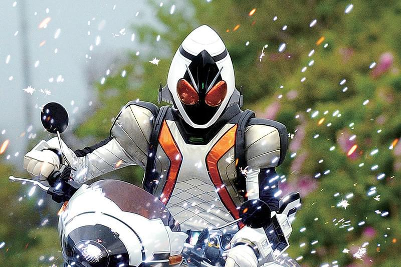
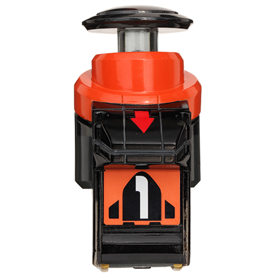
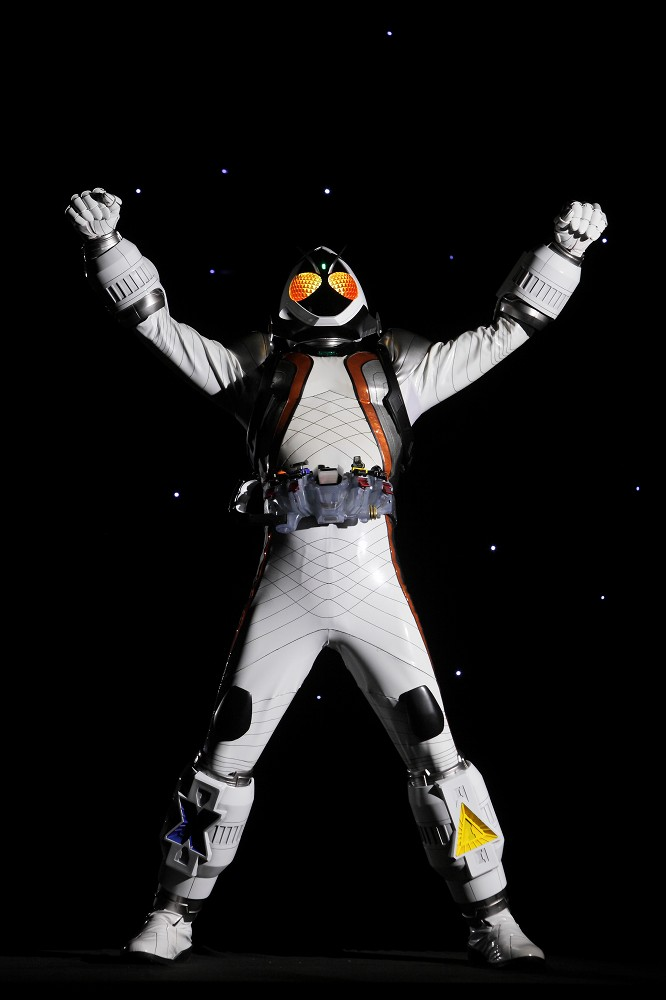
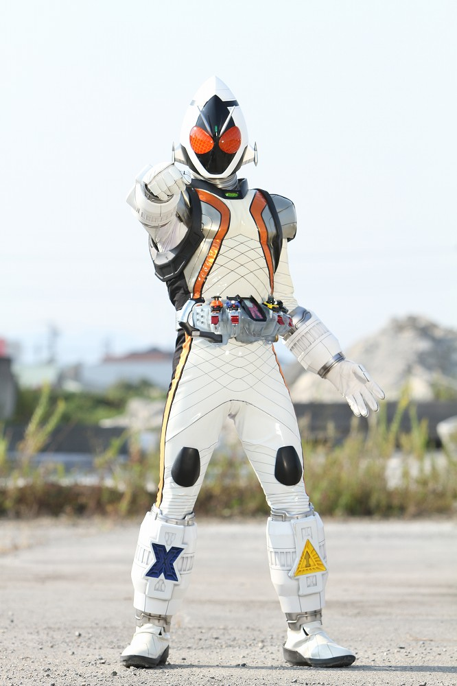
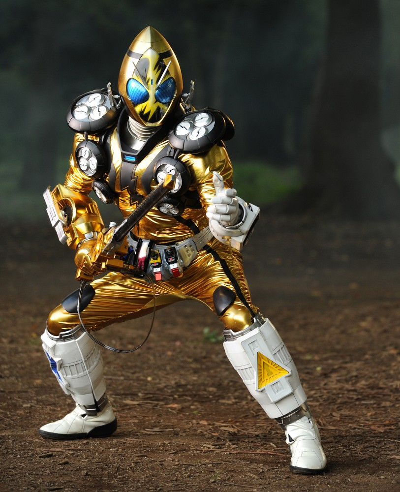
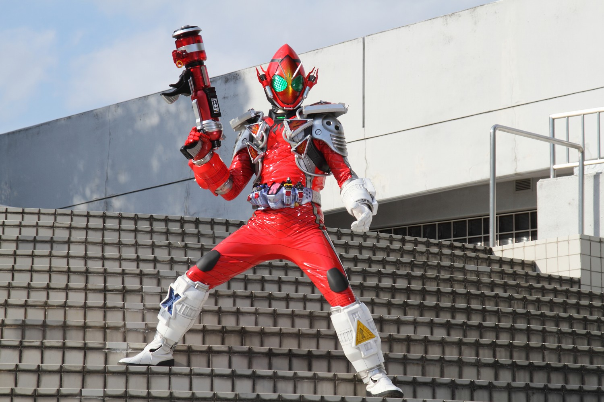
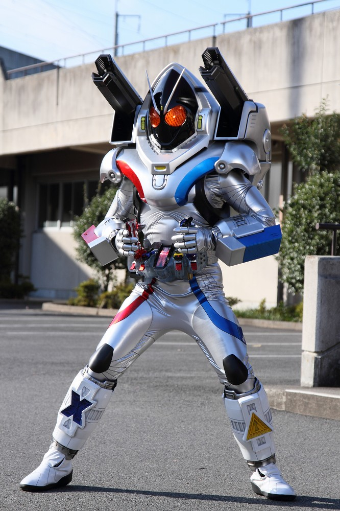
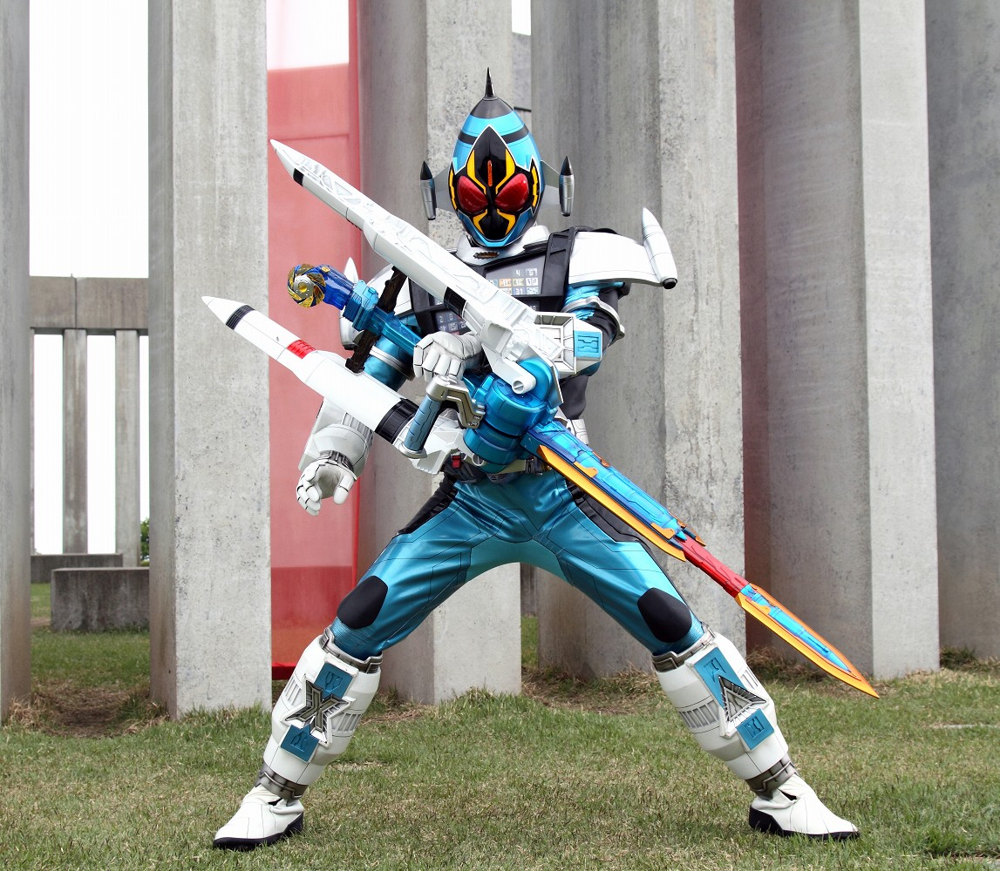
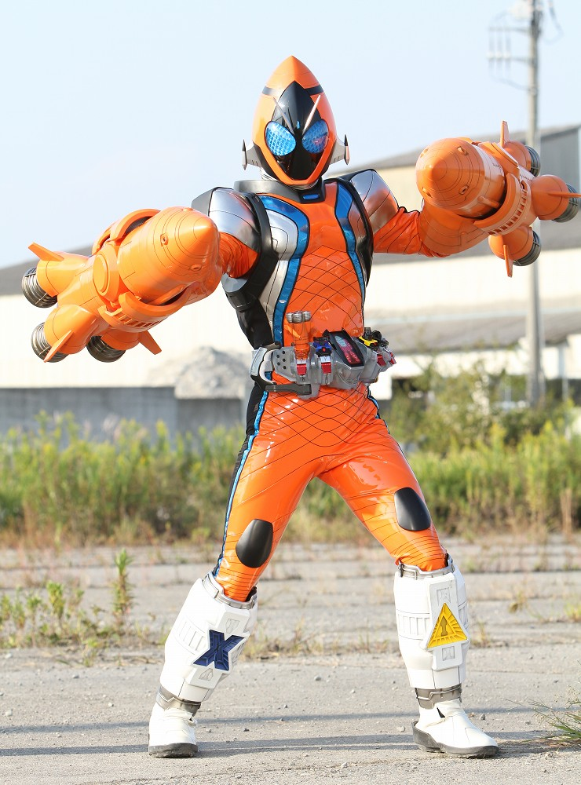
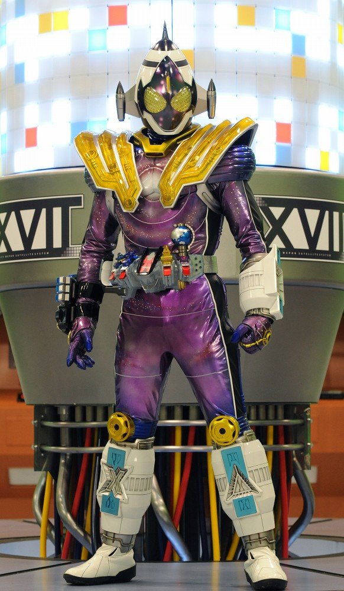

2011年から放送された「仮面ライダーフォーゼ」に登場する仮面ライダー
変身者は如月弦太朗。アストロスイッチを装填したフォーゼドライバーで変身する。
宇宙服の機能を持つ仮面ライダーで、スイッチを変えることで様々な場面に対応できる。
身長：200cm 体重：95kg パンチ力：2.1t キック力：6.3t ジャンプ力：ひと跳び20m 走力：100mを6.2秒程度

フォーゼが使用するスイッチ。
それぞれ右腕、左腕、右足、左足に対応している。
「ロケット」や「ドリル」などの攻撃用もあれば、
「ステルス」、「メディカル」等のサポート用のスイッチもある。
また、ステイツ（形態）を変えることのできるスイッチも存在する。

フォーゼは宇宙服としての役割を持っている。
劇中では無理やり戦闘目的で使用されたが、本来は宇宙を探索するための宇宙服として作られた。
そのため、スペックも他の仮面ライダーより弱い。
だが、豊富なスイッチを活用することで他のライダー達とも渡り合えることが可能だ。

ベースステイツ
フォーゼの基本形態
これといった特徴はない。
だが固有能力がない分、スイッチの特性を活かしやすい形態
頭がとんがっている。

エレキステイツ
「エレキ」スイッチを使い変身。
電撃を操る形態
ロッド型武器ビリーザロッドを使い強力な電撃を放つ
ビリーザロッドのソケットを切り替えることで電撃の形状を変えることができる。
強い。

ファイアーステイツ
「ファイアー」スイッチで変身
熱エネルギーを操作する形態
ヒーハックガンを専用武器とし、火炎放射と消火が可能。
消防隊モチーフだが、なぜ炎を噴射するのかはよくわからない。

マグネットステイツ
「Nマグネット」と「Sマグネット」の２つのスイッチで変身
磁力を操る形態。
NマグネットキャノンとSマグネットキャノンを肩に装備しており、
両肩から強力な電磁砲を放つ。
肩が動かしづらそう。

コズミックステイツ
「コズミック」スイッチで変身
４０個の全てのスイッチの力を使える。
専用装備であるバリズンソードはワープ機能を持ち、
自身と敵を宇宙空間まで瞬時にワープ可能。
戦闘力はそこまで高くないが、応用力が高い形態。

ロケットステイツ
「ロケット」スイッチスーパーワンで変身
推力が１．５倍にまで強化されたロケットモジュールを両腕に装着している。
これにより、複雑な空中の移動が可能となった。
映画限定フォームだが本編最終回でサプライズ出演を果たした。

メテオフュージョンステイツ
「フュージョン」スイッチを使い、フォーゼとメテオが合体し、変身
特殊な形態であり、絆の力で限界を越えた力を秘めている。
フォーゼとメテオの武器を自由に扱える。
メテオ要素がわかりづらい。
仮面ライダー一覧